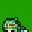
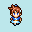
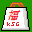
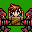
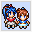
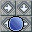

投票結果発表・全作品順位＆投票コメント
掲載内容について
総合順位上位から順番に順位と総合得点、及び各部門得点を掲載します。※SS部門の得点は総合得点に加算しないため右端に置いてあります。
※合計点が同じだった場合、SS部門の点数が高い方が上位となります。
※SS部門の点数も同じだった場合、投票数の多い方が上位となります。
※それでも同点だった場合は、同位とします。
| ▼総合順位と各部門得点▼ | ||||||||||||||
| 順位 | No | Icon | 作品名/作者名 | 技術 | 物語 | 演出 | 斬新 | 遊易 | ﾜﾛｽ | ﾋﾄﾞ | ｴｯﾁ | 票数 | 合計 | SS |
| 第1位 | 01 | Re：Stars And Lights かすていら | 37 | 27 | 41 | 12 | 16 | 4 | 6 | 9 | 43 | 152 | 28 | |
| 第2位 | 04 | 恋々とする涙と夜に吹く風 音合わせ中に窓動かすと同期ズレて悲しい | 23 | 33 | 33 | 7 | 11 | 1 | 1 | 7 | 38 | 116 | 25 | |
| 第3位 | 34 | あることないことｋｓｇセット みじゅふーせん | 6 | 11 | 17 | 17 | 12 | 26 | 22 | 1 | 26 | 112 | 11 | |
| 第4位 | 13 | 海底撈月 みどり | 15 | 36 | 35 | 11 | 6 | 1 | 0 | 3 | 38 | 107 | 24 | |
| 第5位 | 02 | もしもおためシングルだったら 雨水葉月 | 18 | 7 | 15 | 15 | 27 | 11 | 4 | 2 | 34 | 99 | 12 | |
| 第6位 | 33 | どうも、お化け退治専門家です 牧場の牛肉 | 9 | 17 | 18 | 3 | 25 | 8 | 2 | 1 | 29 | 83 | 9 | |
| 第7位 | 16 | THUNDER WINDY -Castle of the UndeadKnigh- | 22 | 5 | 16 | 9 | 20 | 2 | 1 | 0 | 22 | 76 | 9 | |
| 第8位 | 20 | 意味不明劇場 ぬ | 1 | 11 | 10 | 7 | 3 | 16 | 24 | 3 | 24 | 75 | 6 | |
| 第9位 | 49 | 何此地靈異伝 掃除すき太郎 | 12 | 2 | 12 | 8 | 10 | 8 | 10 | 11 | 13 | 73 | 4 | |
| 第10位 | 15 | りばひの二度漬け PIAI専 | 15 | 1 | 10 | 16 | 17 | 8 | 4 | 0 | 21 | 71 | 3 | |
| 第11位 | 14 | ヴァンパイア骸 たんち | 11 | 21 | 17 | 5 | 7 | 4 | 2 | 3 | 23 | 70 | 7 | |
| 第12位 | 27 | 激転メタルコマソード WGAS | 20 | 0 | 13 | 16 | 14 | 5 | 2 | 0 | 20 | 70 | 7 | |
| 第13位 | 37 | 実績を解除！[初めての死] こなき | 2 | 16 | 14 | 2 | 11 | 11 | 7 | 0 | 25 | 63 | 7 | |
| 第14位 | 30 | ファインディングニモ ねむり草 | 1 | 7 | 8 | 6 | 5 | 17 | 16 | 2 | 19 | 62 | 8 | |
| 第15位 | 08 | 死してなお永遠に OJO-B | 5 | 21 | 17 | 5 | 6 | 1 | 1 | 4 | 21 | 60 | 9 | |
| 第16位 | 22 | 万華郷 〜りめいく〜 FAH-Q（ふぁーきゅー） | 3 | 13 | 8 | 7 | 11 | 3 | 1 | 2 | 13 | 48 | 9 | |
| 第17位 | 18 | 人斬りの噺 徳明 | 5 | 12 | 9 | 4 | 6 | 0 | 3 | 8 | 15 | 47 | 9 | |
| 第18位 | 35 | ばりぼっち REBORNプラネットマン | 14 | 0 | 12 | 4 | 10 | 4 | 1 | 1 | 15 | 46 | 8 | |
| 第19位 | 53 | ふたりエッジ ぽんぽこたぬきさん | 2 | 3 | 7 | 4 | 5 | 8 | 10 | 6 | 11 | 45 | 7 | |
| 第20位 | 11 | もしもエムブレム花鳥風月(体験版) 宮永ウインディオ | 14 | 6 | 6 | 4 | 8 | 3 | 3 | 1 | 16 | 45 | 3 | |
| 第21位 | 47 | あばり伝説 原作 あばり 制作 イカスミ | 3 | 4 | 6 | 5 | 4 | 8 | 10 | 4 | 14 | 44 | 7 | |
| 第22位 | 21 | VTuberバトルロワイアル おりおん | 4 | 12 | 6 | 7 | 6 | 2 | 1 | 2 | 12 | 40 | 6 | |
| 第23位 | 06 |  |
Green Life!! 鷹 | 0 | 14 | 5 | 4 | 10 | 4 | 1 | 2 | 15 | 40 | 2 |
| 第24位 | 03 | ネバーメルト あきこ | 0 | 10 | 8 | 9 | 3 | 2 | 6 | 0 | 14 | 38 | 5 | |
| 第25位 | 17 | ご注文はわてりですか？ セミの抜け殻 | 2 | 2 | 6 | 0 | 4 | 10 | 13 | 0 | 13 | 37 | 5 | |
| 第26位 | 31 | おんjのホラーゲームを作ろうとした おんj民の集団だった | 1 | 1 | 7 | 5 | 5 | 9 | 8 | 0 | 12 | 36 | 5 | |
| 第27位 | 05 | チデロボ 焼きそば男 | 13 | 0 | 1 | 7 | 9 | 0 | 0 | 0 | 13 | 30 | 4 | |
| 第28位 | 51 | エピタフ(体験版) 藻太郎 | 2 | 5 | 7 | 1 | 8 | 1 | 2 | 1 | 9 | 27 | 4 | |
| 第29位 | 48 | 肛酔 莉琉 | 2 | 0 | 1 | 0 | 1 | 5 | 12 | 2 | 12 | 23 | 4 | |
| 第30位 | 38 | キャラチップ頭身アップ講座 with RPGツクールDS＋ 紫藤 | 3 | 4 | 3 | 5 | 2 | 0 | 3 | 2 | 7 | 21 | 2 | |
| 第31位 | 42 | 小さな世界の幸福奇譚・前日譚 デイジーの原案 ゲ製の民がVIPRPG作って祭りに突撃する企画 | 0 | 4 | 2 | 0 | 1 | 4 | 6 | 4 | 6 | 21 | 2 | |
| 第32位 | 32 | 強くてニューゲームで運命を変える勇者 黒ヤモリ | 0 | 6 | 2 | 2 | 3 | 1 | 4 | 0 | 8 | 18 | 3 | |
| 第33位 | 09 | ゴメス☆ジャンケン NONE | 2 | 0 | 1 | 1 | 4 | 4 | 5 | 1 | 7 | 18 | 1 | |
| 第34位 | 29 |  |
もしも半人前の勇者が アラン・スミシー | 1 | 3 | 2 | 1 | 8 | 1 | 1 | 0 | 12 | 17 | 4 |
| 第35位 | 36 | ろーぷれつくろ～のミニksg集・2020紅白編 ろーぷれつくろ～ | 0 | 1 | 4 | 1 | 3 | 3 | 4 | 0 | 6 | 16 | 3 | |
| 第36位 | 28 |  |
Ｘ－羅仁宇式 RPG2000作品福袋 紅白2020Ver. Ｘ－羅仁宇（らにう） | 1 | 4 | 2 | 1 | 4 | 2 | 1 | 1 | 7 | 16 | 2 |
| 第37位 | 52 | custom.exe- 霧山 千明 | 2 | 1 | 1 | 2 | 0 | 2 | 4 | 0 | 5 | 12 | 2 | |
| 第38位 | 24 |  |
天空山賊キャプテンダーロック -宇宙の幼女はオレのヨメ- 魔禁胆 | 1 | 2 | 2 | 1 | 1 | 2 | 3 | 0 | 4 | 12 | 1 |
| 第39位 | 45 | Word Butler 無の迷宮 イロイロ | 1 | 3 | 2 | 1 | 8 | 1 | 3 | 1 | 3 | 12 | 1 | |
| 第40位 | 10 |  |
I'll be Brave ～Re：だって勇者だもの～ ◆AMAlKoCBjkNn | 1 | 1 | 1 | 1 | 1 | 2 | 2 | 2 | 4 | 11 | 2 |
| 第41位 | 07 | AQUHADE35 AQUHADEMASTER | 0 | 0 | 2 | 1 | 0 | 1 | 3 | 1 | 4 | 8 | 1 | |
| 第42位 | 40 | リナメビとゆるく越える年末2020 ニートT | 0 | 3 | 2 | 0 | 1 | 1 | 0 | 0 | 4 | 7 | 3 | |
| 第43位 | 39 | VIPRPGおへそ集 輪ゴムでべそマン | 0 | 0 | 0 | 1 | 0 | 1 | 3 | 1 | 3 | 6 | 0 | |
全作品の投票コメント
投票時に寄せられたコメントを掲載します。※表彰作品はそちらに投票コメントをまとめているのでリンクを貼ります。
※未投票作品、未提出作品及びコメントの無い作品は省きます。
※現在は加筆中です
| ▼作品に対する投票コメント(エントリーNo順)▼ | |||||||||
| No | Icon | 作品名/作者名 | 投票コメント | ||||||
| 01 | Re：Stars And Lights かすていら | ［全ての投票コメント］ | |||||||
| 02 | もしもおためシングルだったら 雨水葉月 | ［全ての投票コメント］ | |||||||
| 03 | ネバーメルト あきこ | ★魔王把握のループものという着眼点が斬新でした (-/20代/-) ★魔王把握もviprpgでは見ないキャラがやると斬新で面白い。 (-/20代/♂) ★独特の雰囲気が素敵なゲームです。自壊できる所までいけるかどうかで、作品の印象ががらりと変わるのでそういう意味では少し敷居が高いかも。 (-/-/-) ★元ネタは知識だけ知ってる状態ですが、別に知らなくても遊べます。 元ネタとはほぼ違う独特な世界観でした。 奇妙なHPの減り方の謎がわかった時には、納得しました。確かに最初のエンドの最後にヒントがありました。魔王把握ゲーとして、アドベンチャーゲームとしてちゃんと楽しく遊べました、ラストバトルで技をどうするか最後になるまでわかりませんでしたが、そこまで迷うことはありませんでした。意外と面白かったです。 (-/-/-) |
|||||||
| 04 | 恋々とする涙と夜に吹く風 音合わせ中に窓動かすと同期ズレて悲しい | ［全ての投票コメント］ | |||||||
| 05 |  |
チデロボ 焼きそば男 |
★音がクセになるパズル (-/20代/-) ★ボールを落とさないようにゴールへ届けるパズルゲーム。 チュートリアルは難しかったですが、ゲーム自体は最初は簡単で、 後から難しくなるようになってて良かったです。良い頭の体操になりそうです。 (-/-/-) ★全国100万人の氷の床ファン垂涎のギミック豊かな慣性ミニゲーム こういうゲームはモバイルでやりたくなるのも時代か (-/-/-) ★まだ完全クリアはしていませんが、楽しんでプレイしています。 (-/30代/-) |
||||||
| 06 | Green Life!! 鷹 |
★ヒメディちゃんいいね (-/20代/-) ★何気ない日常の大切さすき、良いお話でした (-/20代/-) ★サモンとヒメディとついでにヘルがメインの見るゲ。 ヘルが終始玉座から出ることがないので、結局ヒメディと直接対面するのがエンディングからなので圧倒的に遅いのですが、 毎日アグネファイアが魂の催促をしているのできちんとヘルの気持ちと動きがわかって良かったです。 サモンとヒメディの交流が微笑ましかったです。少し切ないところもあるものの、基本的にハッピーで良かったです。 (-/-/-) ★健康は大事だ！ヘルさんはあんまいい活躍はしないかも… (らいちり/30代/♂) ★謎が残るストーリーでした。 (河澄/20代/-) ★皆良い奴で、読後感が良いです。テーマ曲らしい音楽も印象的です (あきこ/-/♀) ★やり取りが面白く、チャプターの刻み方が細かくて読みやすい (-/-/-) ★親しかった故人に重ねてしまう……ある意味運命の出会いですね。 (ラムネル/20代/♂) |
|||||||
| 07 | AQUHADE35 AQUHADEMASTER |
★アクアとハデスがメインのksg。 あみじゃがのゴリ押しが印象に残りました。 アクアが思ったよりS寄りで驚きました。 (-/20代/-) ★怒涛のアクハデラッシュ 好みは分かれど独自色は貫いてほしいですな ハデスのキャラ付けにはそんな理由が…？ (らいちり/30代/♂) ★マンドラゴラに癒やされる (-/-/-) |
|||||||
| 08 | 死してなお永遠に OJO-B | ［全ての投票コメント］ | |||||||
| 09 | ゴメス☆ジャンケン NONE |
★リリアはわからなくなったのであてずっぽうで挑みましたｺﾞﾒｽ (ラムネル/20代/♂) ★fu-maは人形が見つからなくて詰んだ (-/-/-) |
|||||||
| 10 | I'll be Brave ～Re：だって勇者だもの～ ◆AMAlKoCBjkNn |
★シナリオは熱く、VIPRPGキャラクターの特徴をよく把握して表現していて掘り下げの深さを感じる ただ自分は「ぶりけつこがペルナを助けた」とかホコグラだけで特定できてしまうサイドの人間なので大半のプレイヤーにとってはオリキャラじみたヒロインが活躍するゲームに留まるかもしれない (-/-/-) ★08年版の方が良かった (-/50代/♂) |
|||||||
| 11 | もしもエムブレム花鳥風月(体験版) 宮永ウインディオ |
★細かいところまで再現されててすごい！他の人にもオススメしたいくらい楽しめました！ (-/-/-(青虎)) ★ちゃんとSRPGになっててすごい ベルジーヌかわいい (-/20代/-/黒鷹) ★SRPG Studioなどがある中、あえてのツクールでFEオマージュ 好感度システムもある 会話が楽しく、クラスごとの分岐など骨を折って作られていることがひしひしと伝わる (-/-/-(黒鷹)) ★ｖｘのキャラ等、他のゲームであまり見かけないキャラがいて面白いですね (パリ/30代/♂(金馬)) |
|||||||
| 13 | 海底撈月 みどり | ［全ての投票コメント］ | |||||||
| 14 | ヴァンパイア骸 たんち | ［全ての投票コメント］ | |||||||
| 15 | りばひの二度漬け PIAI専 | ［全ての投票コメント］ | |||||||
| 16 | THUNDER WINDY -Castle of the UndeadKnigh- | ［全ての投票コメント］ | |||||||
| 17 | ご注文はわてりですか？ セミの抜け殻 | ［全ての投票コメント］ | |||||||
| 18 | 人斬りの噺 徳明 | ［全ての投票コメント］ | |||||||
| 20 | 意味不明劇場 ぬ | ［全ての投票コメント］ | |||||||
| 21 | VTuberバトルロワイアル おりおん |
★Vtuberについての豊富な知見、そして読み応えのある展開 かつてのバトロワSSのフォーマットを好んで読んでいた層なら楽しめるだろう (-/-/-) ★力作長編。もしもロワイアルを死や友情に感動する作品とするならば、本作は何が起こるかわくわくさせられる作品。ここまで心躍った見るゲ作品は久しぶりだ。 人間罪を犯してもやり直すことができるという強いメッセージ性を感じ取れた。感情移入していた一人の少女が生存したことが私にとっての希望。 本作の終盤のテーマが混沌から希望へと昇華していく魂の群像劇。実にすばらしい。 (お菓子の国のまぜそば姫/-/-) ★完成お疲れ様！すごく良かったよ！ (-/30代/♂) ★天皇(ときのそら)が即死するのはギャグ線高い (野うさぎ/10代以下/♂) ★話がめっちゃ熱かった！ (-/-/♂) ★セーブの感覚が短く、ちょっとずつ読み進められるのが現代にあっていて良かった (-/20代/♂) ★箱やジャンルをまたいでの意欲作。エイレーン一家を知らなかったので理解に時間が掛かったが軌道に乗れば面白かった。一部Vの布教用としてもグッド。いやらしさはアリスちゃんへ。 (-/30代/♂) ★好きな猫宮ひなたが雑魚2キルしか取れなかったのが残念でした またひなたやゲーム部道明寺などが何故強いかが説明されていなかったので初見やコラボで少し見た程度の人間だと入りづらいだろうなというのもありました ファイヤードレイクやのらきゃっとの説明が丁寧すぎたのでそちらの説明不足が逆に気になってしまいました 人選はベストに近かったと思います。どの箱のファンが見ても楽しめるでしょうし、今の流行りの面子だとホロとにじの似たような性質のキャラに偏るのでバトロワとしては動画勢もある程度いた方が面白くなるので今回の人選は良いと思いました 男が極端に少なかったのが残念でしたが、やるとしたらにじさんじばかりになりそうで難しいですね。作者には女子キャラにも男性キャラのような戦闘員の役割としてカバーさせられるほど文章力が高かったので素直にすごいなと思いました (おしゅし/10代以下/♂) |
|||||||
| 22 | 万華郷 〜りめいく〜 FAH-Q（ふぁーきゅー） |
★2015年バージョンの正統進化という形で良かったです。当時の長くてきついダンジョンは大分緩くなり、テンポ良く進めました。 自作素材が多く、そういう意味でも製作は大変だったと思いますが、その分独自の味が出ていたと思います。 素晴らしい作品ありがとうございました。 (-/-/その他) ★徹底してツクール2000の初期や全盛期全開の見た目に 懐かしさと不便さを感じましたが、 作中の空気も相まって想像の3倍楽しめました。 (-/20代/♂) ★王道な和風RPG。 絵柄が可愛らしく、戦闘難易度もヒントがある上に終盤を除けば低いのでRPG初心者でも安心して進めれそうです。 優しい主人公、ヤンチャな姫様、苦労性な子狐等、キャラクターが魅力的でした。 敵キャラでは終盤辺りの百合と見せかけた薔薇な2人に吹きました。苦労したところは2人で戦わなければならない終盤のボスです。 一発で最大体力のほとんどを失ってしまいました。レベルを上げればなんとかなると思いますが、自分はゴリ押しでなんとか倒せました。ラスボスはタフでいい感じに強かったです。 物語は勧善懲悪で序盤は平和ながらも、後半になるにつれ徐々にシリアスになっていきました。王道な和風RPGとして面白かったです。 (-/-/-) ★こういった素朴で質が高く、ローコンテクストでキャラの美しさや流行り廃りに依存しない作品は今となっては稀有 バズったり実況で盛り上がったりするようなタイプのゲームではないが、プレイヤーに瞳がしっかりと向いている善いRPG (-/-/-) ★前作プレイ済み。正統派で遊びやすかったです。欲を言えば新作が見たい！ (-/-/-) |
|||||||
| 24 | 天空山賊キャプテンダーロック -宇宙の幼女はオレのヨメ- 魔禁胆 |
★マップが広めの割にチップの変化が乏しくルートが整理されていない 地図は一応拾えるが歩数に比例して探索欲が1次関数的に失われていく (-/-/-) ★それなりに面白くプレイさせていただきました。 （『隠し』のハクスラの方は少ししかやって無いですが・・・） ドラゴナスと飛行船での脱出は見ましたが、あと一つが まだ見れてないですね・・・。 機会があれば、プレイで挑戦してみようか思ってます。 （ついでにノー任務失敗にも） (X-羅仁宇(作品No.28 出品者)/30代/♂) |
|||||||
| 27 | 激転メタルコマソード WGAS | ［全ての投票コメント］ | |||||||
| 28 | Ｘ－羅仁宇式 RPG2000作品福袋 紅白2020Ver. Ｘ－羅仁宇（らにう） |
★時代はアレブラではなくエデマー (-/-/-) ★魔王把握は新キャラがいなければ個人的にもっと良かった） (-/-/-) ★魔王軍のヌクモリティがgood。失われしVIPRPGここにあり。女兵士の自作素材がフェチくてよかった。 (-/-/-) |
|||||||
| 29 | もしも半人前の勇者が アラン・スミシー |
★もっと長編でも遊んでみたいくらいには面白かった (ゆき/20代/♂) ★リナックスが主役の短編RPG。 技を連発できるおかげで、サクサク進む事ができました。 でも、自分のやった初期バージョンでは、レベルキャップが低く、ラストは苦労しました。特にラスボスが強かったです。強すぎてりどみの攻略を見ました。それでも戦いが長くなりましたが、勝てて良かったです。良きデフォ戦でした。 (-/-/-) ★物語面はイマイチなのですが、仕掛けなどところどころ斬新さが見える部分もありますね (らいちり/30代/♂) ★一本道仕様のデフォ戦ゲー 装備更新もないシンプル 進行方向が明白で戦闘後全回復するのでプレイはしやすい (-/-/-) ★システム面で凝った作りだと感じました。技エフェクトの効果音が気持ちいい。 (-/20代/♂) |
|||||||
| 30 | ファインディングニモ ねむり草 | ［全ての投票コメント］ | |||||||
| 31 | おんjのホラーゲームを作ろうとした おんj民の集団だった |
★青鬼系の作品にしては謎解き要素が希薄で恐怖の盛り上げ方に欠けるがマップの組み方が上手くライティングが美麗 (-/-/-) ★ヒエ～ッｗｗｗｗｗｗｗｗｗｗｗｗｗｗｗｗｗｗ (-/30代/♂) ★お、jか？ (-/-/-) ★キャラのコミカルさとマップのホラーらしい雰囲気が合わさり、独特の味わいになっていていいと思う。関係ない民家に行こうとした時の台詞で笑った。 (-/30代/♂) |
|||||||
| 32 | 強くてニューゲームで運命を変える勇者 黒ヤモリ |
★序盤のゲームでありがちな負けイベントを勇者がどうにかしようとしたお話。
個人的に切なかったです。 (-/-/-) ★妹を救うにはこうするしかなかったんや… (ラムネル/20代/♂) ★最強のシスコン (-/-/-) ★イベントを破壊する発想にうなりました。 (あきこ/-/♀) |
|||||||
| 33 | どうも、お化け退治専門家です 牧場の牛肉 | ［全ての投票コメント］ | |||||||
| 34 | あることないことｋｓｇセット みじゅふーせん | ［全ての投票コメント］ | |||||||
| 35 | ばりぼっち REBORNプラネットマン |
★画面にぎっしり詰め込まれたバリアーズが可愛かった (-/20代/-) ★ツクールでまさかの数独ゲーム。 バリアを数字に見立ててるので、本気でわかりにくかったです。 数独のルールに苦労しながら、一つはクリアできましたが、後がダメでした。 二回プレイしただけなので、機会があればやっていきたいです。 ゲーム自体はよく出来てるので、数独が得意な人なら大丈夫そうです。 (-/-/-) ★こういう穴埋め系パズルは達成感味わえて好き。 追加パッチでバリア切り替えの挙動を逆にしてくれるシステムの実装が非常に有り難かった。 あとBGMや切り替え時の効果音めちゃすこです。 (ラムネル/20代/♂) ★可愛いバリアちゃんが沢山出て良かった (wgas/20代/-) ★バリア魔法のアイコンが可愛らしい変形数独 仮置きができないのでコンソールの数独ゲーより難しく感じる (-/-/-) ★バリアーズ推しとしてやるっきゃない！数独の独とぼっちをかけているのね… (らいちり/30代/♂) ★完成度は高いけどボリュームが少ないかな。作者の腕はさすが (-/20代/-) ★数独初めてやったけど、ルールを覚えたら夢中になった。 このゲームの場合は数字じゃなくて、色鮮やかなキャラクターだから視覚的にも楽しめた。 (-/20代/-) ★作者三十代だろw (マジカル頭脳パワーとか何人が分かるの/10代以下/♂) |
|||||||
| 36 | ろーぷれつくろ～のミニksg集・2020紅白編 ろーぷれつくろ～ |
★名の通り、ksgと作者独自のキャラ説明が入ったゲーム。 自作品を秒で終わらせるシリーズは何もトラブルがないまま普通に終わったり、超展開がおきて終わったりとバリエーションがありました。 作品が終わるときのゲームオーバーの音楽が早くなってて吹きました。 シフトアップネットの名をここで見れて良かったです。そのサイトに昔行ってたので、internetホームページ用素材集Midi＆WAVコレクションの音楽が聴いた事があって懐かしく感じました。ありがとうございます。 はい設があって良かったです。ああああが思ったより強くて吹きました。 (-/-/-) ★過去の全自作品を丁寧かつ雑に終わらせててワロタ。 (河澄/20代/-) ★リンカの身長が179cmもあってビックリ 俺の2倍じゃん (-/-/-) ★これからもろーぷれさんのオリキャラたちが中心に繰り広げていくもしもワールドを楽しみにしております。 (ラムネル/20代/♂) |
|||||||
| 37 | 実績を解除！[初めての死] こなき | ［全ての投票コメント］ | |||||||
| 38 | キャラチップ頭身アップ講座 with RPGツクールDS＋ 紫藤 |
★作りが丁寧だし、作者さんが楽しんでtkってる感じがあるのが好き プラス地方の４人組の登場が増えるといいな (-/30代/♂) ★講座ゲーはもう少しさっと読み進めたい気もする (-/-/-) ★作者のドット技術がすごい。クロイツがかわいいです。 (-/-/♀) ★予防線貼りすぎて会話が永井 (メリッサはどうすれば輝けるのか/10代/♂) ★文章はやや助長だが楽しい感じだった (-/-/-) ★熱意は感じました (-/-/-) |
|||||||
| 39 | VIPRPGおへそ集 輪ゴムでべそマン |
★リストの空きが多すぎるだろ (-/-/-) |
|||||||
| 40 | リナメビとゆるく越える年末2020 ニートT |
★コロナ収まるといいね (-/20代/♂) ★何十畳の部屋だ (-/-/-) ★作者さんにも今後ももしも作品作ってほしいですね。 (ラムネル/20代/♂) |
|||||||
| 42 | 小さな世界の幸福奇譚・前日譚 デイジーの原案 ゲ製の民がVIPRPG作って祭りに突撃する企画 |
★この本の世界のアレックスに同情しました (-/20代/-) ★ライトくんをモブおじさんにやらせないなんて こんなに俺とデイジーで意識の差があるとは思わなかった…！ (-/-/-) |
|||||||
| 45 | Word Butler 無の迷宮 イロイロ |
★シンボルエンカウントだが通路が狭くシンボルが密集していて逃走しても消滅せず（あるいは無判定時間がなく）、もどかしい 回復ポイントやセーブポイントが限定されており（実はPT入れ替え画面でセーブできるバグ技的なものはあるが）、ファストトラベル手段もないので、1階のゴメスにポイントをもらっていても進行が億劫になってくるし、正攻法だと尚更のこと (-/-/-) ★懐かしい感じのするRPGでした (-/30代/♂) |
|||||||
| 47 | あばり伝説 原作 あばり 制作 イカスミ |
★俺の名はあばり！伝説（レジェンド）だ！自分を襲う死の運命に抗う者と伝説のハンター（と後なんかカレー臭い乗り物）は栄光を掴めるのか…？ (らいちり/30代/♂) ★大地属性の魔法よりインターネット広告を防げ (-/-/-) ★リーフバリアの女子アナ感がよき。うんこ帽の活躍が意外と少なかった。 (-/-/-) ★素晴らしい作品です。 (VIPから来ますた/30代/♂) |
|||||||
| 48 | 肛酔 莉琉 | ［全ての投票コメント］ | |||||||
| 49 | 何此地靈異伝 掃除すき太郎 | ［全ての投票コメント］ | |||||||
| 51 | エピタフ(体験版) 藻太郎 |
★この作者にしては正統派なプロットでやや懐古主義的ではあるものの精神性への傾きも控えめと思っていたが（ゲームバランスは基本いつも良いのでそこは違わない）、ややローゼンクロイツを彷彿とさせる謎を多く残したどんでん返し
続きを待つ (-/-/-) ★切ないけど未完成の世界。名作になりそうな気もします。 (お菓子の国のまぜそば姫/-/-) ★藻太郎君が帰ってきた。独特な世界観は健在だ (パリ/30代/♂) ★さようならFLASH (アリス/10代以下/♂) ★完成版に期待 (-/20代/-) |
|||||||
| 52 | custom.exe 霧山 千明 |
★紅白に時折降臨する実写カルト系ゲーム 様々な点でプレイヤーへの歩み寄りが赤道半周足りず、もはや作品そのものが意志を持ってプレイヤーを拒絶している感すらあるが、使用されている語彙自体はよくよく読むとデジモンくらいの水準である 20年後くらいにあらゆるコンテンツが飽食を極め、その奇異性しか語られなくなった世界で誰かに評価されるかもしれないが、その誰かが絶対に自分ではないということは確か (-/-/-) ★クッソ下品なロックマン。戦闘バランス含め嫌いじゃないです。 (河澄/20代/-) ★これをクイックセーブなしでクリアできたらすごいと思う (-/30代/♂) |
|||||||
| 53 | ふたりエッジ ぽんぽこたぬきさん | ［全ての投票コメント］ | |||||||